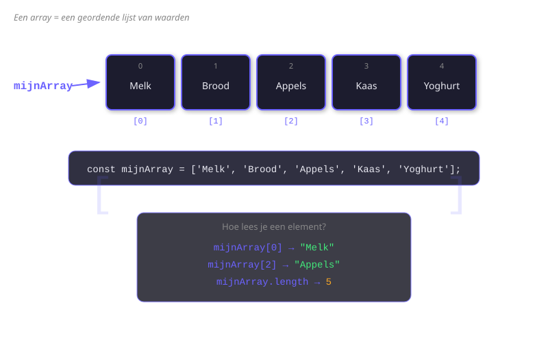
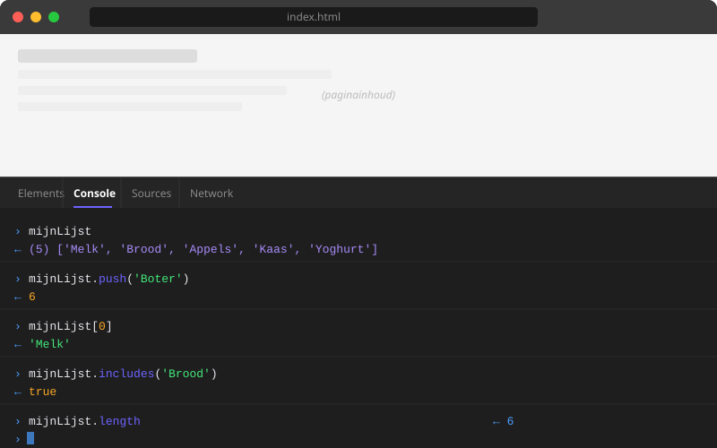

Arrays
- Een array declareren en de juiste elementen opvragen via index
- Elementen toevoegen met
push,unshiften verwijderen metpop,shift,splice - Zoeken in een array met
indexOf,includesenlastIndexOf - Een deelrij ophalen met
sliceen arrays samenvoegen metconcatof de spread operator... - Een praktisch programma schrijven dat een array beheert
1.1 Wat is een array?
Een array is een geordende lijst van waarden. Je kan er meerdere dingen in bewaren onder één naam. Elke waarde in een array heet een element, en elk element heeft een index — een volgnummer dat begint bij 0.
// Declaratie van een array
let boodschappen = ["appels", "brood", "melk", "kaas"];
// De index: 0 1 2 3Je maakt een array met vierkante haakjes [ ]. De elementen staan gescheiden door komma's.
// Lege array
let lege = [];
// Array met getallen
let scores = [85, 92, 78, 95, 88];
// Gemengde types (werkt, maar vermijd dit)
let gemengd = ["Jan", 17, true, null];De length-eigenschap
Met .length weet je hoeveel elementen er in een array zitten.
let kleuren = ["rood", "groen", "blauw"];
console.log(kleuren.length); // 3Let op: de laatste index is altijd length - 1.

1.2 Elementen opvragen en wijzigen
Een element opvragen
Gebruik de index tussen vierkante haakjes:
let fruits = ["banaan", "kers", "mango", "peer"];
console.log(fruits[0]); // "banaan"
console.log(fruits[2]); // "mango"
console.log(fruits[9]); // undefined (bestaat niet)Het eerste en laatste element
let getallen = [10, 20, 30, 40, 50];
// Eerste element
console.log(getallen[0]); // 10
// Laatste element
console.log(getallen[getallen.length - 1]); // 50Een element wijzigen
let steden = ["Brussel", "Gent", "Luik"];
steden[1] = "Antwerpen"; // Gent vervangen door Antwerpen
console.log(steden); // ["Brussel", "Antwerpen", "Luik"]1.3 Elementen toevoegen en verwijderen
JavaScript heeft vier veelgebruikte methodes om elementen toe te voegen of te verwijderen:
| Methode | Wat doet het? |
|---|---|
push() | Voeg toe aan het einde |
pop() | Verwijder van het einde |
unshift() | Voeg toe aan het begin |
shift() | Verwijder van het begin |
push() — toevoegen aan het einde
let wachtrij = ["Ali", "Bo", "Cara"];
wachtrij.push("Daan");
console.log(wachtrij); // ["Ali", "Bo", "Cara", "Daan"]
// Je kan meerdere elementen tegelijk toevoegen
wachtrij.push("Elien", "Farid");
console.log(wachtrij); // ["Ali", "Bo", "Cara", "Daan", "Elien", "Farid"]pop() — verwijderen van het einde
let wachtrij = ["Ali", "Bo", "Cara", "Daan"];
let laatste = wachtrij.pop();
console.log(laatste); // "Daan"
console.log(wachtrij); // ["Ali", "Bo", "Cara"]unshift() — toevoegen aan het begin
let taken = ["zwemmen", "lopen"];
taken.unshift("yoga");
console.log(taken); // ["yoga", "zwemmen", "lopen"]shift() — verwijderen van het begin
let taken = ["yoga", "zwemmen", "lopen"];
let eerste = taken.shift();
console.log(eerste); // "yoga"
console.log(taken); // ["zwemmen", "lopen"]splice() — verwijderen of invoegen op een positie
splice(startIndex, aantalVerwijderen, ...nieuwElements) is de krachtigste methode:
let letters = ["a", "b", "c", "d", "e"];
// Verwijder 2 elementen vanaf index 1
let verwijderd = letters.splice(1, 2);
console.log(verwijderd); // ["b", "c"]
console.log(letters); // ["a", "d", "e"]
// Voeg in op index 1, zonder iets te verwijderen
letters.splice(1, 0, "x", "y");
console.log(letters); // ["a", "x", "y", "d", "e"]1.4 Zoeken in een array
indexOf() — positie zoeken
Geeft de index van het eerste voorkomen terug. Geeft -1 als het element niet gevonden wordt.
let kleuren = ["rood", "groen", "blauw", "groen"];
console.log(kleuren.indexOf("groen")); // 1 (eerste voorkomen)
console.log(kleuren.indexOf("geel")); // -1 (niet gevonden)lastIndexOf() — laatste voorkomen
let kleuren = ["rood", "groen", "blauw", "groen"];
console.log(kleuren.lastIndexOf("groen")); // 3 (laatste voorkomen)includes() — bestaat dit element?
let deelnemers = ["Jan", "Lena", "Sofie", "Omar"];
console.log(deelnemers.includes("Lena")); // true
console.log(deelnemers.includes("Kevin")); // false
// Praktisch gebruik: conditie
if (deelnemers.includes("Sofie")) {
console.log("Sofie doet mee!");
}1.5 Kopiëren en samenvoegen
slice() — een deelrij ophalen
slice(start, einde) geeft een nieuw array terug, zonder het origineel te wijzigen. Het element op de eindindex zit er niet bij.
let maanden = ["jan", "feb", "mar", "apr", "mei", "jun"];
let kwartaal1 = maanden.slice(0, 3);
console.log(kwartaal1); // ["jan", "feb", "mar"]
let vanalaf = maanden.slice(3);
console.log(vanalaf); // ["apr", "mei", "jun"]
// Negatieve index: telt van achter
let laaste2 = maanden.slice(-2);
console.log(laaste2); // ["mei", "jun"]concat() — arrays samenvoegen
let afdeling1 = ["Ali", "Bo"];
let afdeling2 = ["Cara", "Daan"];
let allemaal = afdeling1.concat(afdeling2);
console.log(allemaal); // ["Ali", "Bo", "Cara", "Daan"]Spread operator ...
De spread operator ... "spreidt" een array uit zijn haakjes. Dit is de moderne manier om arrays samen te voegen of te kopiëren:
let groep1 = [1, 2, 3];
let groep2 = [4, 5, 6];
// Samenvoegen met spread
let samengevoegd = [...groep1, ...groep2];
console.log(samengevoegd); // [1, 2, 3, 4, 5, 6]
// Kopiëren
let kopie = [...groep1];
kopie.push(99);
console.log(groep1); // [1, 2, 3] ← origineel ongewijzigd
console.log(kopie); // [1, 2, 3, 99]
// Iets tussenvoegen
let uitgebreid = [...groep1, 10, 20, ...groep2];
console.log(uitgebreid); // [1, 2, 3, 10, 20, 4, 5, 6]Zowel concat() als de spread operator voegen arrays samen, maar spread is flexibeler: je kan er gemakkelijk extra elementen aan toevoegen of arrays op willekeurige posities invoegen. Gebruik spread in moderne code.
Oefeningen
Schrijf een JavaScript-programma dat een boodschappenlijst beheert via de console. Gebruik de volgende stappen:
- Maak een array
boodschappenmet 5 producten:"appels","brood","melk","kaas","eieren" - Toon de volledige lijst met
console.log - Voeg
"pasta"toe aan het einde metpush() - Voeg
"boter"toe aan het begin metunshift() - Verwijder het laatste element met
pop()en toon welk product verwijderd werd - Controleer of
"melk"in de lijst zit — toon een bericht op basis van het resultaat - Haal een deelrij op van de eerste 3 producten met
slice() - Maak een tweede kleine lijst
extra = ["peper", "zout"]en combineer de twee lijsten met de spread operator

Maak een array films met 6 filmtitels naar keuze. Voer dan de volgende bewerkingen uit:
- Zoek de index van je favoriete film met
indexOf()en log het resultaat - Gebruik
lastIndexOf()om te controleren of een titel dubbel voorkomt (voeg er eerst eentje dubbel in) - Verwijder de film op index 2 met
splice() - Voeg op index 1 twee nieuwe filmtitels in zonder iets te verwijderen
- Maak een kopie van de array met de spread operator en voeg aan de kopie een extra film toe — controleer dat het origineel ongewijzigd bleef
Je hebt een array met de maandnamen van een volledig jaar. Gebruik array-methodes om kwartaalrapporten op te stellen:
let maanden = ["jan","feb","mar","apr","mei","jun","jul","aug","sep","okt","nov","dec"];- Haal het eerste kwartaal op (jan t.e.m. mar) met
slice() - Haal het tweede kwartaal op (apr t.e.m. jun)
- Haal het laatste kwartaal op met een negatieve index
- Voeg alle vier kwartalen samen in één nieuwe array met de spread operator
- Controleer met
includes()of"aug"in het derde kwartaal zit
Huistaak
Opdracht: Muzieklijst beheren met arrays
Je bouwt een kleine JavaScript-toepassing die een muzieklijst beheert. De lijst is een array van artiestennamen en je past er verschillende array-methodes op toe. Alle uitvoer gebeurt via console.log().
Deel 1 — Array aanmaken en manipuleren (4 punten)
[ADB09] Array-methodes toepassen — verdieping
- Maak een array
artiestenaan met minstens 5 artiestennamen naar keuze - Voeg met
push()een nieuwe artiest toe aan het einde van de array. Log de nieuwe array - Verwijder met
pop()de laatste artiest. Log de verwijderde naam én de aangepaste array - Voeg met
unshift()een artiest toe aan het begin van de array. Log de nieuwe array - Verwijder met
shift()de eerste artiest. Log de verwijderde naam én de aangepaste array
Deel 2 — Zoeken en uitsnijden (3 punten)
- Kies een artiest uit de array. Gebruik
indexOf()om de index te bepalen en log het resultaat - Gebruik
includes()om te controleren of een artiest die niet in de array staat toch gevonden wordt. Logtrueoffalse - Gebruik
slice(1, 3)om de tweede en derde artiest te selecteren en log de nieuwe deelarray
Deel 3 — Verwijderen en invoegen met splice (3 punten)
- Gebruik
splice()om de tweede artiest uit de array te verwijderen. Log de verwijderde artiest en de resterende array - Gebruik
splice()om op positie 1 een nieuwe artiest in te voegen zonder iemand te verwijderen. Log de aangepaste array - Gebruik
splice()om twee artiesten tegelijk te vervangen. Log het eindresultaat
Dien het bestand muzieklijst.js in via het schoolplatform. Totaal: 10 punten
Vragenlijst
Controleer of je de leerstof van dit hoofdstuk begrijpt.
Gegeven: let arr = ["a", "b", "c", "d"]. Welk element geeft arr[2] terug?
Welke methode voegt een element toe aan het begin van een array?
Wat geeft indexOf() terug als het element niet in de array zit?
Gegeven: let arr = [1, 2, 3, 4, 5]. Wat geeft arr.slice(1, 3) terug?
Welke uitdrukking geeft het laatste element van een array arr terug, ongeacht de lengte?
Wat doet let kopie = [...original]?